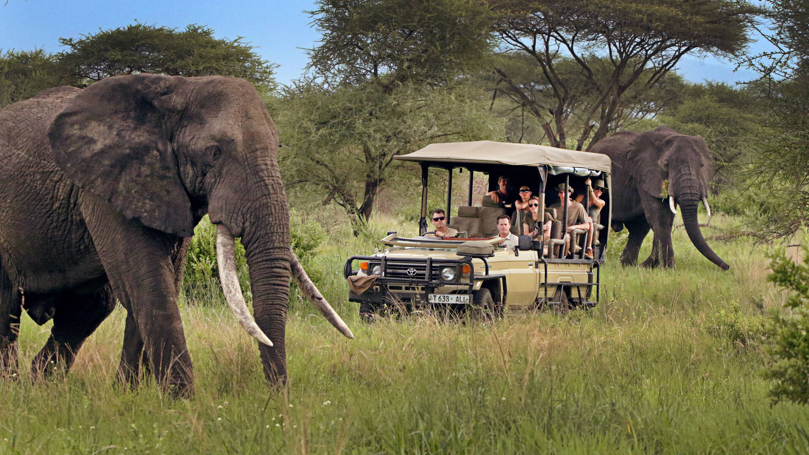

Guided Game Drives

Set out across the savannah in an open safari vehicle as the landscape comes alive with movement and light. With an expert guide leading the way, you track wildlife through golden grasslands and along winding riverbanks, with the chance to encounter everything from graceful antelope to the iconic Big Five. Unobstructed views and the thrill of the open air make every sighting more vivid—whether it's a distant herd on the horizon or a close-up moment you'll never forget. It's a classic safari experience: immersive, dynamic, and full of surprises.